library(MASS)QSBS Practical 2 — Probability distributions Answers
Introduction
In this practical we work with theoretical probability distributions rather than with data. All distribution functions we need (dnorm(), pbinom(), qpois(), …) live in the stats package, which is always loaded in R. Only in the last exercise do we compare a distribution with real data, and for that we are again using data from the MASS package, so we make sure this package is loaded.
Every distribution in R comes with the same family of four functions, recognisable by their prefix: d (density), p (cumulative probability), q (quantile = inverse cumulative) and r (random numbers).
Exercise 1
A toxicological experiment (see Dormann, Sect. 3.4.3) places n = 30 water fleas (Daphnia) in water with a certain salt concentration. Each flea dies independently with probability p, so the number of deaths k follows a binomial distribution.
Plot the probability mass function of the binomial distribution for n = 30 and p = 0.8 for all possible outcomes k = 0, 1, ..., 30. Use a plot type that is appropriate for a discrete distribution. Add the mass functions for p = 0.5 and p = 0.2 to the same plot in a different colour.
Describe in words what changes when p changes, and explain why the curve for p = 0.5 is both wider and lower than the other two.
Answer
The binomial distribution is discrete: only the whole numbers \(0, 1, \ldots, 30\) can occur, and there is nothing in between. A smooth line would suggest that intermediate values exist, so we plot vertical spikes (type = "h") with a dot on top (points(..., pch = 19)). The three sets of spikes are shifted slightly sideways so that they do not overlap.
k <- 0:30
plot(k - 0.15, dbinom(k, size = 30, prob = 0.2), type = "h", lwd = 2,
col = "steelblue", las = 1, ylim = c(0, 0.2),
xlab = "k (number of dead water fleas)", ylab = "probability P(X = k)")
points(k + 0.00, dbinom(k, size = 30, prob = 0.5), type = "h", lwd = 2,
col = "grey50")
points(k + 0.15, dbinom(k, size = 30, prob = 0.8), type = "h", lwd = 2,
col = "firebrick")
legend("topright", bty = "n", lwd = 2,
col = c("steelblue", "grey50", "firebrick"),
legend = c("p = 0.2", "p = 0.5", "p = 0.8"))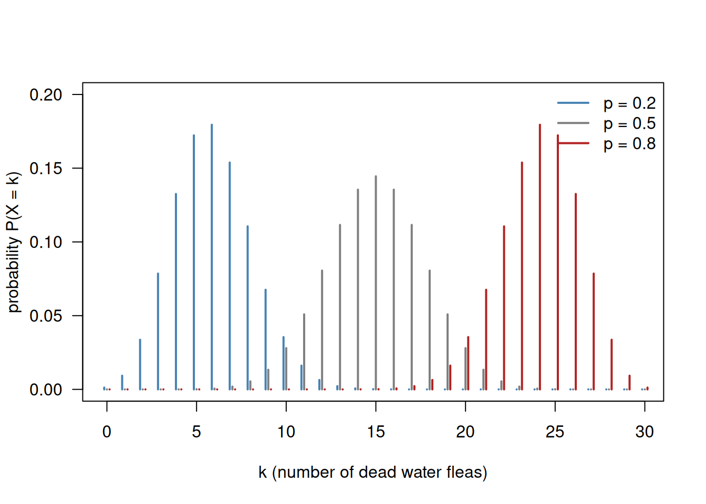
The parameter p moves the distribution along the x-axis: the bulk of the probability sits around \(n \cdot p\), so around 6, 15 and 24 respectively.
The distribution for p = 0.5 is clearly the widest and the lowest. The reason is that the total probability always has to add up to 1:
c(p0.2 = sum(dbinom(k, size = 30, prob = 0.2)),
p0.5 = sum(dbinom(k, size = 30, prob = 0.5)),
p0.8 = sum(dbinom(k, size = 30, prob = 0.8)))p0.2 p0.5 p0.8
1 1 1 If a distribution is spread over more outcomes, each individual outcome must receive less probability. The binomial variance is largest at \(p = 0.5\) (there the outcome is most uncertain) and shrinks as p approaches 0 or 1 (there the outcome is nearly certain), so the p = 0.5 spikes are spread out and therefore low, while the p = 0.2 and p = 0.8 spikes are concentrated and therefore high. Note also that p = 0.2 and p = 0.8 are mirror images of each other.
Exercise 2
Staying with the binomial distribution for n = 30 and p = 0.8, calculate:
- the probability that exactly 24 fleas die;
- the probability that at most 24 fleas die;
- the probability that more than 24 fleas die (do this without typing
1 -anywhere); - the probability that between 20 and 25 fleas die (both limits included).
Then show, for part (b), that adding up the individual probabilities dbinom() gives you for k = 0, 1, ..., 24 returns exactly the same number as the single call to pbinom(). Explain in one sentence what this demonstrates about the relationship between d...() and p...().
Answer
The prefix tells you what you get: dbinom() is the probability of one specific outcome, pbinom() is the accumulated probability of everything up to and including that outcome.
ex2 <- c(
a_exactly_24 = dbinom(24, size = 30, prob = 0.8),
b_at_most_24 = pbinom(24, size = 30, prob = 0.8),
c_more_than_24 = pbinom(24, size = 30, prob = 0.8, lower.tail = FALSE),
d_between_20_25 = pbinom(25, size = 30, prob = 0.8) -
pbinom(19, size = 30, prob = 0.8)
)
round(ex2, 4) a_exactly_24 b_at_most_24 c_more_than_24 d_between_20_25
0.1795 0.5725 0.4275 0.7192 Some points to note:
lower.tail = FALSEswitchespbinom()from \(P(X \le q)\) to \(P(X > q)\). This is the recommended way of getting an upper tail probability; it is also numerically more accurate than1 - pbinom(...)far out in the tail.
- Because the distribution is discrete, “20 up to and including 25” is \(P(X \le 25) - P(X \le 19)\). Subtracting
pbinom(20, ...)would wrongly also remove the outcome \(k = 20\) itself. The same answer is obtained by summing the individual probabilities:
- Because the distribution is discrete, “20 up to and including 25” is \(P(X \le 25) - P(X \le 19)\). Subtracting
sum(dbinom(20:25, size = 30, prob = 0.8))[1] 0.7191505The requested comparison for part (b):
sum_of_d <- sum(dbinom(0:24, size = 30, prob = 0.8))
single_p <- pbinom(24, size = 30, prob = 0.8)
c(sum_of_dbinom = sum_of_d, pbinom = single_p)sum_of_dbinom pbinom
0.5724876 0.5724876 all.equal(sum_of_d, single_p)[1] TRUEThis demonstrates that the cumulative distribution function is nothing else than the running total of the probability mass function: p...() accumulates what d...() produces. For a continuous distribution the same relationship holds, except that the sum becomes an integral, i.e. the area under the density curve (see Exercise 7).
Exercise 3
The Poisson distribution describes count data and has a single parameter \(\lambda\).
Plot the probability mass function of the Poisson distribution for \(\lambda = 1\), \(\lambda = 4\) and \(\lambda = 10\) in one figure, for k = 0, 1, ..., 20. Then make a second figure with the corresponding cumulative distribution functions. Describe what happens to the shape of the distribution as \(\lambda\) increases, and relate this to the Central Limit Theorem (Dormann, Sect. 3.1.1).
Next, suppose we observe the value k = 2 while \(\lambda = 10\). Calculate \(P(X = 2 \mid \lambda = 10)\) and \(P(X \le 2 \mid \lambda = 10)\) and explain, using the two figures, where you can read each of these two numbers off the graphs.
Answer
This reproduces Fig. 3.4 of Dormann.
k <- 0:20
plot(k, dpois(k, lambda = 1), type = "h", lwd = 2, col = "black", las = 1,
ylim = c(0, 0.4),
xlab = "k", ylab = "probability P(X = k)")
points(k, dpois(k, lambda = 1), pch = 19, col = "black")
points(k, dpois(k, lambda = 4), type = "h", lwd = 2, col = "steelblue")
points(k, dpois(k, lambda = 4), pch = 19, col = "steelblue")
points(k, dpois(k, lambda = 10), type = "h", lwd = 2, col = "firebrick")
points(k, dpois(k, lambda = 10), pch = 19, col = "firebrick")
legend("topright", bty = "n", pch = 19,
col = c("black", "steelblue", "firebrick"),
legend = c("Pois(1)", "Pois(4)", "Pois(10)"))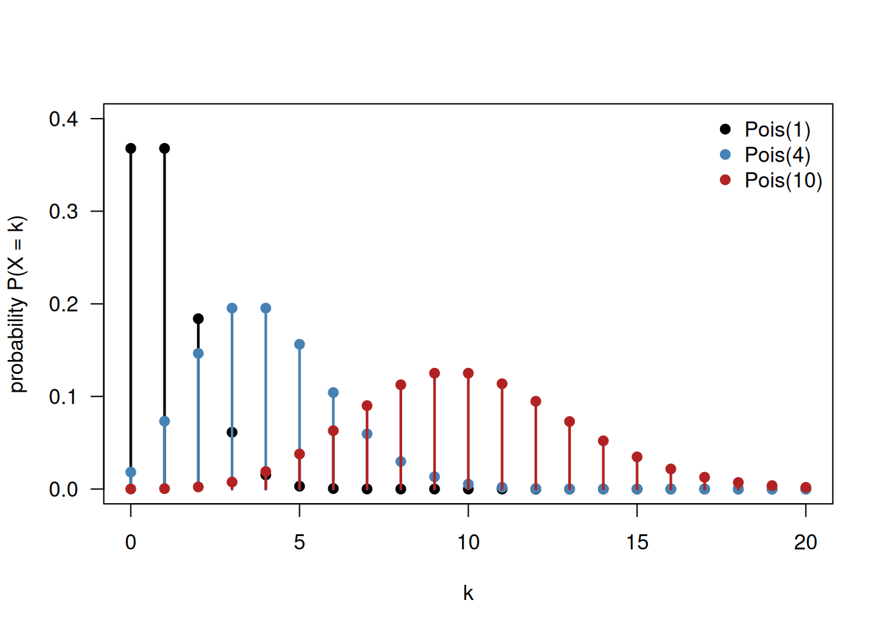
The cumulative distribution functions are step functions: they jump at every integer by exactly the probability of that integer, and stay flat in between. Plotting them with type = "s" (steps) makes this visible.
plot(k, ppois(k, lambda = 1), type = "s", lwd = 2, col = "black", las = 1,
ylim = c(0, 1),
xlab = "k", ylab = "cumulative probability P(X <= k)")
lines(k, ppois(k, lambda = 4), type = "s", lwd = 2, col = "steelblue")
lines(k, ppois(k, lambda = 10), type = "s", lwd = 2, col = "firebrick")
abline(h = c(0, 1), col = "grey", lty = 3)
legend("bottomright", bty = "n", lwd = 2,
col = c("black", "steelblue", "firebrick"),
legend = c("Pois(1)", "Pois(4)", "Pois(10)"))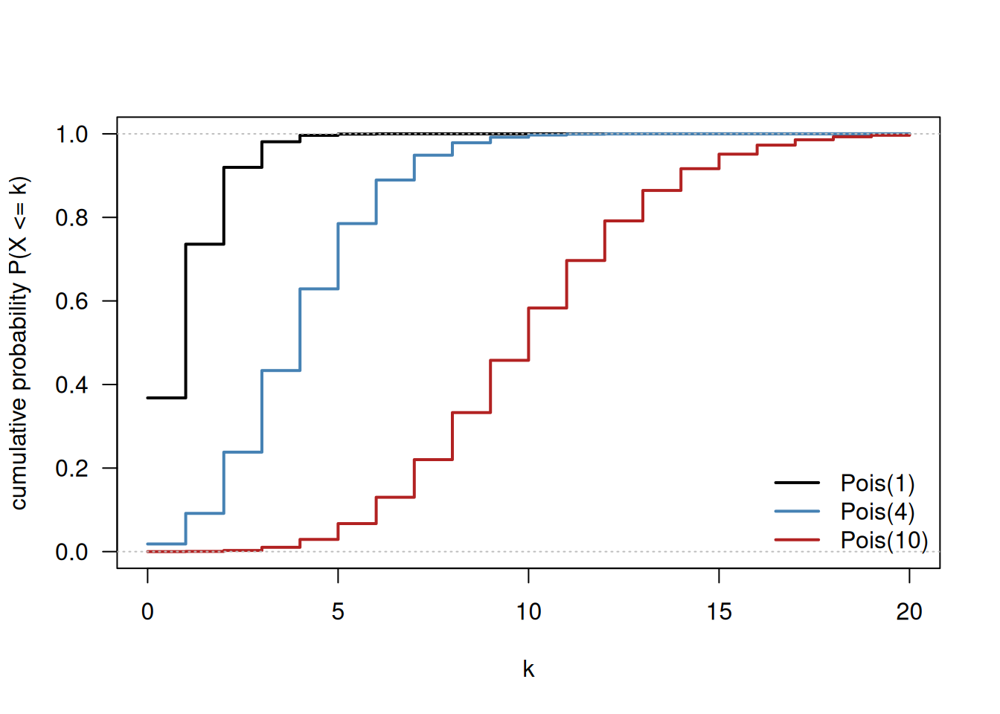
Interpretation of the figures:
- As \(\lambda\) increases the distribution moves to the right (\(\lambda\) is the mean) and simultaneously becomes wider and flatter (for the Poisson distribution the variance equals the mean, so a larger mean automatically implies more spread).
- For \(\lambda = 1\) the distribution is strongly right-skewed and is cut off on the left at \(k = 0\). For \(\lambda = 10\) the skew has largely disappeared and the shape is almost symmetric: Pois(10) already looks very much like a normal distribution. This is the Central Limit Theorem at work: a Poisson variable with \(\lambda = 10\) can be thought of as the sum of ten independent Pois(1) variables, and sums of many independent contributions tend towards a normal distribution.
- In the cumulative plot the same information appears as the steepness of the staircase: Pois(1) reaches 1 almost immediately, Pois(10) climbs slowly and needs about 20 steps.
The two requested probabilities:
c(P_equal_2 = dpois(2, lambda = 10),
P_at_most_2 = ppois(2, lambda = 10)) P_equal_2 P_at_most_2
0.002269996 0.002769396 \(P(X = 2 \mid \lambda = 10) = 0.0023\) is the height of the single red spike above \(k = 2\) in the first figure. \(P(X \le 2 \mid \lambda = 10) = 0.0028\) is the height of the red staircase at \(k = 2\) in the second figure, and it equals the sum of the heights of the three spikes at \(k = 0, 1, 2\):
sum(dpois(0:2, lambda = 10))[1] 0.002769396Both numbers are tiny: observing only 2 counts when 10 are expected is a very unusual result. Note that for a discrete distribution dpois() really is a probability, so it can be read directly as such — this is not true for continuous distributions (Exercise 4).
Exercise 4
Reproduce Fig. 3.3 of Dormann: plot the probability density of three normal distributions in one figure, N(0, 1), N(-1, 1.5) and N(0, 2), over the range \(-6\) to \(6\). Use curve() and label the axes properly. Make a second figure with the three corresponding cumulative distribution functions.
Use the figures to answer the following questions:
- Which parameter determines the position of the top of the curve, and which one the width?
- Why do all three density curves have a different height, even though each of them describes a complete distribution?
- In the cumulative plot, at which y-value do the three curves cross their own mean? Why?
Finally, for the standard normal distribution N(0, 1), calculate dnorm(2) and pnorm(2). Both numbers appear in the two figures, but they mean something very different. Explain the difference, and state which of the two is a probability.
Answer
The normal distribution is continuous, so here we do draw a smooth line. curve() is the convenient function for this: it evaluates a function of x between from and to. Additional curves are added with add = TRUE.
curve(dnorm(x, mean = 0, sd = 1), from = -6, to = 6, lwd = 2, las = 1,
ylim = c(0, 0.42),
xlab = "x", ylab = "probability density")
curve(dnorm(x, mean = -1, sd = 1.5), add = TRUE, lwd = 2, col = "steelblue")
curve(dnorm(x, mean = 0, sd = 2), add = TRUE, lwd = 2, col = "firebrick")
legend("topright", bty = "n", lwd = 2,
col = c("black", "steelblue", "firebrick"),
legend = c("N(0, 1)", "N(-1, 1.5)", "N(0, 2)"))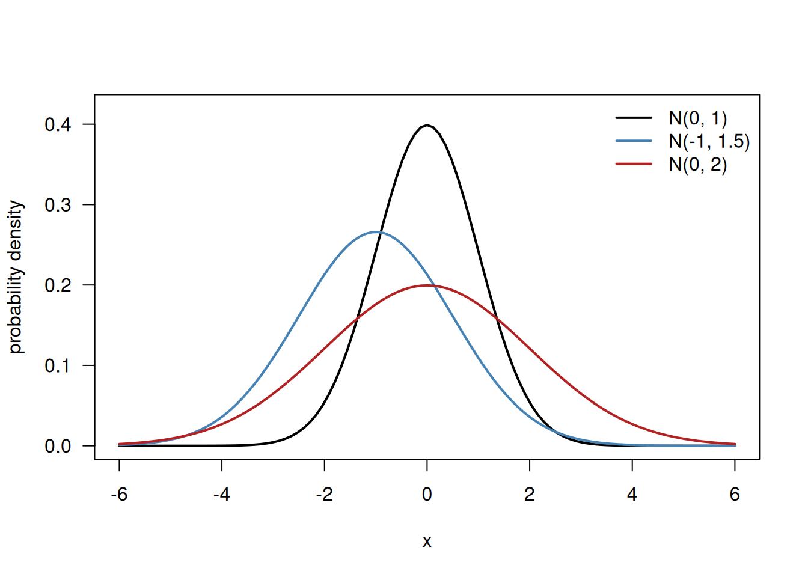
curve(pnorm(x, mean = 0, sd = 1), from = -6, to = 6, lwd = 2, las = 1,
ylim = c(0, 1),
xlab = "x", ylab = "cumulative probability P(X <= x)")
curve(pnorm(x, mean = -1, sd = 1.5), add = TRUE, lwd = 2, col = "steelblue")
curve(pnorm(x, mean = 0, sd = 2), add = TRUE, lwd = 2, col = "firebrick")
abline(h = 0.5, lty = 2, col = "grey40")
legend("bottomright", bty = "n", lwd = 2,
col = c("black", "steelblue", "firebrick"),
legend = c("N(0, 1)", "N(-1, 1.5)", "N(0, 2)"))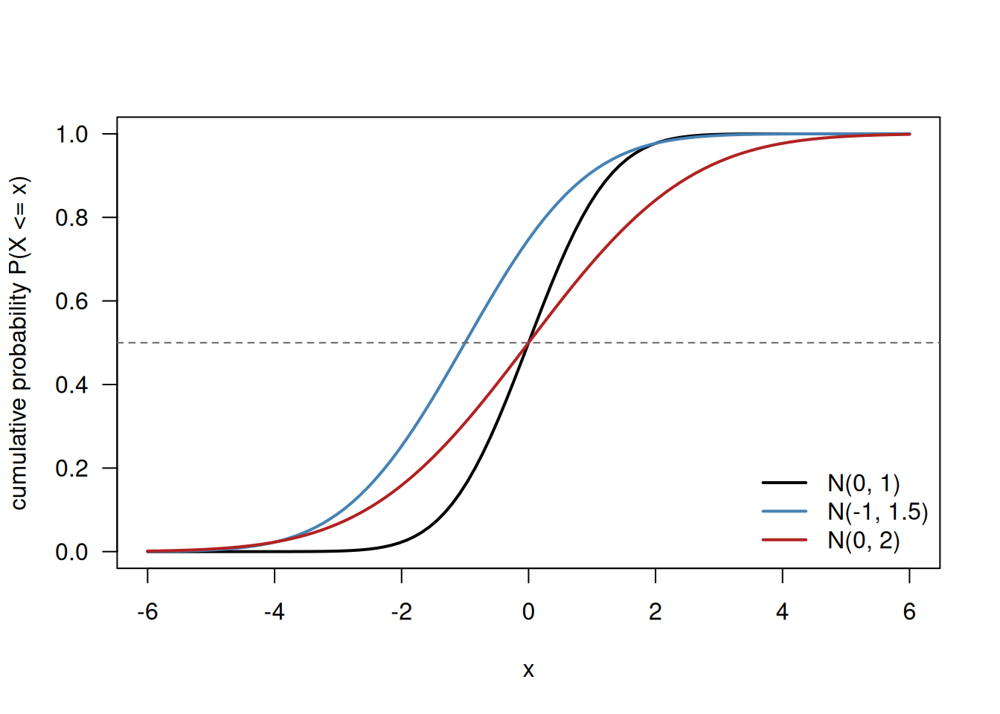
a. The mean \(\mu\) determines where the top of the curve lies: the blue curve N(-1, 1.5) is shifted one unit to the left. The standard deviation \(\sigma\) determines the width: N(0, 2) is visibly the widest, N(0, 1) the narrowest. \(\mu\) is therefore a location parameter and \(\sigma\) a scale parameter.
b. Because the area under every density curve has to be exactly 1. A wider curve must therefore be lower, and a narrower curve higher; height and width compensate each other. The height of a density curve on its own has no interpretation as a probability.
c. All three cumulative curves pass through \(y = 0.5\) at their own mean (0, \(-1\) and 0, respectively). The normal distribution is symmetric around \(\mu\), so exactly half of the probability lies to the left of the mean; for a symmetric distribution the mean and the median coincide.
The two numbers for N(0, 1):
c(density_at_2 = dnorm(2), cumulative_at_2 = pnorm(2)) density_at_2 cumulative_at_2
0.05399097 0.97724987 dnorm(2) = 0.054 is the height of the black density curve at x = 2 in the first figure. It is a probability density, not a probability. The probability that a continuous variable takes exactly the value 2 is 0, because a single point has no width and therefore encloses no area. Densities can even be larger than 1 (try dnorm(0, mean = 0, sd = 0.1)), which by itself already shows that they cannot be probabilities.
pnorm(2) = 0.977 is the height of the black cumulative curve at x = 2 in the second figure, and this one is a probability: if a value comes from N(0, 1), then 97.7% of all values are smaller than or equal to 2. A measurement of 2 is therefore an unusually high value; the remaining \(100 - 97.7 = 2.3\%\) of the values lie above it.
pnorm(2, lower.tail = FALSE)[1] 0.02275013Exercise 5
The q...() functions do the opposite of the p...() functions: you supply a probability and they return the value on the x-axis. This is why they are called quantile functions or inverse cumulative distribution functions.
- For the standard normal distribution, calculate the values that cut off the lower 2.5%, the middle (50%) and the lower 97.5% of the distribution.
- Verify that
qnorm()really invertspnorm()by feeding the output of one into the other for a value of your choice. - Plot the inverse cumulative distribution function of the standard normal distribution, i.e. plot
qnorm(p)againstp, forprunning from just above 0 to just below 1. Compare the shape of this figure with the cumulative distribution function you plotted in Exercise 4 and explain how the two are related. - Now plot the inverse cumulative distribution function of the Poisson distribution with \(\lambda = 4\) in the same way. This figure looks like a staircase. Explain why, and explain what
qpois(0.5, lambda = 4)means.
Answer
a. The three quantiles:
qnorm(c(0.025, 0.50, 0.975), mean = 0, sd = 1)[1] -1.959964 0.000000 1.959964The familiar values \(\pm 1.96\) appear: 95% of a standard normal distribution lies between \(-1.96\) and \(1.96\), and 2.5% sticks out on either side. The 50% quantile is 0, the median (= mean, because the distribution is symmetric).
b. Going back and forth returns the value we started with:
x0 <- 1.3
p0 <- pnorm(x0) # from a value to a probability
back <- qnorm(p0) # and back again
c(x = x0, p = p0, q_of_p = back) x p q_of_p
1.3000000 0.9031995 1.3000000 all.equal(x0, back)[1] TRUEc. The inverse cumulative distribution function has the probability on the x-axis and the value on the y-axis.
curve(qnorm(x), from = 0.001, to = 0.999, lwd = 2, las = 1,
xlab = "probability p", ylab = "quantile qnorm(p)")
abline(h = 0, v = 0.5, col = "grey", lty = 3)
segments(x0 = 0.975, y0 = -4, x1 = 0.975, y1 = qnorm(0.975), col = "firebrick", lty = 2)
segments(x0 = 0.001, y0 = qnorm(0.975), x1 = 0.975, y1 = qnorm(0.975), col = "firebrick", lty = 2)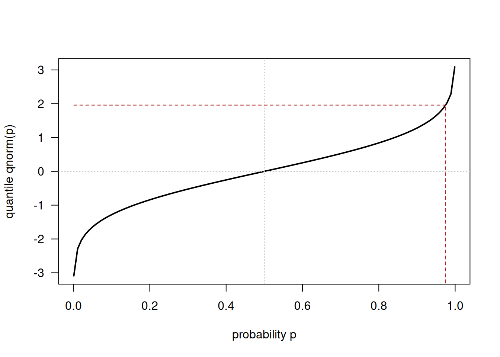
This figure is exactly the cumulative distribution function of Exercise 4 with the two axes swapped, i.e. mirrored in the diagonal. Whatever pnorm() reads from left to right, qnorm() reads from bottom to top. The curve becomes very steep near \(p = 0\) and \(p = 1\) because the normal distribution has no upper or lower limit: to capture the last fraction of a percent you have to move ever further into the tails. The interval boundaries are deliberately chosen as 0.001 and 0.999, since qnorm(0) is \(-\infty\) and qnorm(1) is \(+\infty\).
d. For a discrete distribution the quantile function is a step function.
p_grid <- seq(0.001, 0.999, length.out = 500)
plot(p_grid, qpois(p_grid, lambda = 4), type = "s", lwd = 2, las = 1,
xlab = "probability p", ylab = "quantile qpois(p, lambda = 4)")
abline(v = 0.5, col = "grey", lty = 3)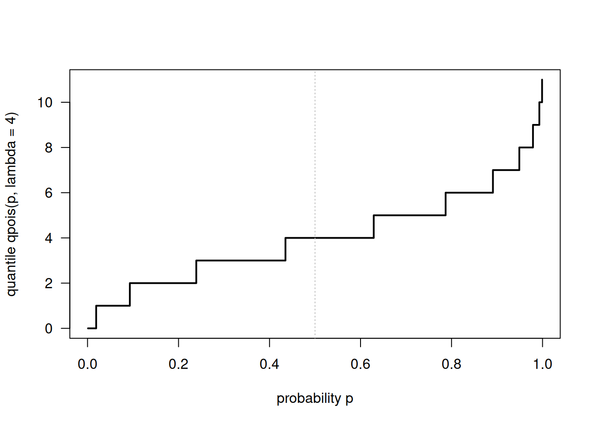
The staircase arises because a Poisson variable can only take whole numbers. The function returns the smallest integer \(k\) for which \(P(X \le k) \ge p\), so the answer stays constant until p passes the next step of the cumulative distribution function, and then jumps by a whole unit. The widths of the treads are exactly the probabilities dpois(k, lambda = 4): the widest tread corresponds to the most probable count.
c(median = qpois(0.5, lambda = 4),
check_ppois_3 = ppois(3, lambda = 4),
check_ppois_4 = ppois(4, lambda = 4)) median check_ppois_3 check_ppois_4
4.0000000 0.4334701 0.6288369 qpois(0.5, lambda = 4) = 4 is the median of Pois(4): 4 is the smallest count for which the cumulative probability reaches at least 0.5 (ppois(3, 4) = 0.43 is still below 0.5, ppois(4, 4) = 0.63 is above it). Note that for a discrete distribution the cumulative probability at the median is generally not exactly 0.5 — no value of \(k\) achieves that.
Exercise 6
Three continuous distributions with a restricted domain are the uniform, the log-normal and the gamma distribution (Dormann, Sects. 3.4.6, 3.4.7 and 3.4.9). Look up their R functions and their arguments with ?dunif, ?dlnorm and ?dgamma.
- Plot the density of the uniform distribution on the interval [2, 6] together with its cumulative distribution function. Explain the height of the density (0.25) and the fact that the cumulative distribution function is a straight line.
- Plot the density of the log-normal distribution with
meanlog = 0andsdlog = 1, and of the gamma distribution withshape = 2andscale = 2, each over a sensible range. Describe the shape of both curves and state for which kind of measurement each would be a plausible model. - For the log-normal distribution above, calculate the median with
qlnorm()and the mean with the formula \(e^{\mu + \sigma^2/2}\). Mark both in the density plot. Why are they not equal, and why isexp(0) = 1not the mean of this distribution?
Answer
Before plotting any distribution it is essential to know its domain: the uniform distribution here only exists between 2 and 6, and the log-normal and gamma distributions are only defined for positive values. Choosing from and to accordingly is half the work.
a. Uniform distribution on [2, 6]:
par(mfrow = c(1, 2))
curve(dunif(x, min = 2, max = 6), from = 0, to = 8, n = 1001, lwd = 2, las = 1,
ylim = c(0, 0.35),
xlab = "x", ylab = "probability density")
abline(v = c(2, 6), col = "grey", lty = 3)
curve(punif(x, min = 2, max = 6), from = 0, to = 8, n = 1001, lwd = 2, las = 1,
xlab = "x", ylab = "cumulative probability")
abline(v = c(2, 6), col = "grey", lty = 3)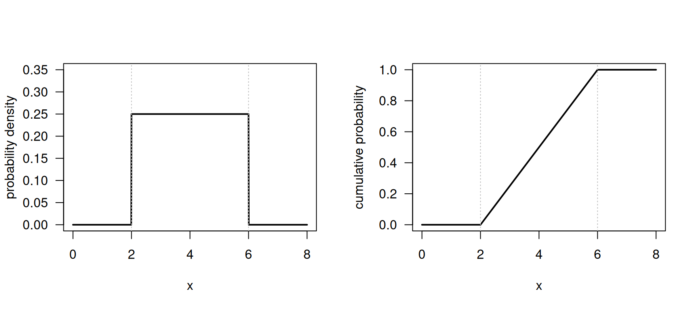
par(mfrow = c(1, 1))The density is flat: every value between 2 and 6 is equally likely. The height follows from the requirement that the total area equals 1. The base of the rectangle is \(6 - 2 = 4\), so the height must be \(1/4 = 0.25\):
c(density = dunif(3, min = 2, max = 6),
area = 4 * dunif(3, min = 2, max = 6),
integral = integrate(dunif, lower = 2, upper = 6, min = 2, max = 6)$value) density area integral
0.25 1.00 1.00 Because the density is constant, the accumulated area grows at a constant rate, and the cumulative distribution function is therefore a straight line rising from 0 at \(x = 2\) to 1 at \(x = 6\). Outside the interval the density is 0 and the cumulative function is flat at 0 or at 1.
b. Log-normal and gamma:
par(mfrow = c(1, 2))
curve(dlnorm(x, meanlog = 0, sdlog = 1), from = 0, to = 8, n = 1001,
lwd = 2, las = 1, col = "steelblue",
xlab = "x", ylab = "probability density", main = "log-normal(0, 1)")
curve(dgamma(x, shape = 2, scale = 2), from = 0, to = 20, n = 1001,
lwd = 2, las = 1, col = "firebrick",
xlab = "x", ylab = "probability density", main = "gamma(shape = 2, scale = 2)")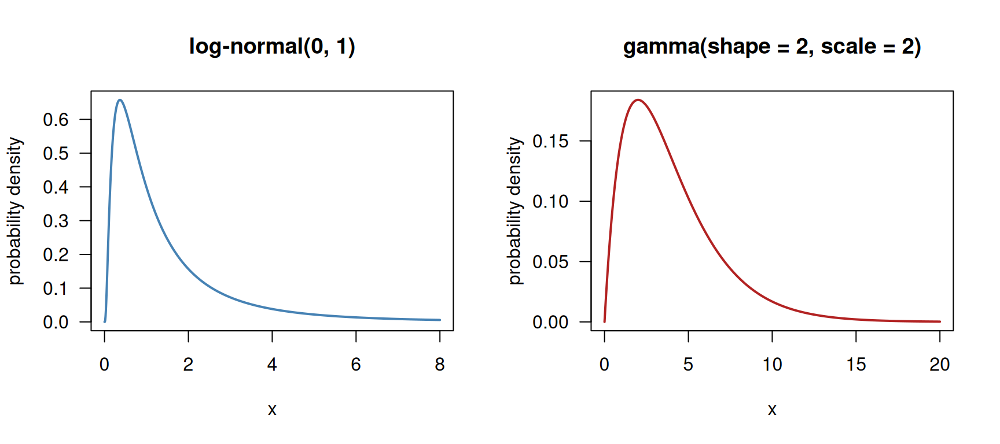
par(mfrow = c(1, 1))Both curves start at 0, rise to a single peak and then decline with a long right tail: they are strongly right-skewed, and neither of them can produce negative values. They are therefore plausible models for measurements that are positive by definition and occasionally very large: concentrations, body or seed masses, rainfall amounts, waiting times, or the leaf area lost to herbivores. The log-normal arises when many factors act multiplicatively (taking the logarithm of a log-normal variable gives a normal distribution again), the gamma distribution typically arises as a waiting time.
c. Mean and median of the log-normal distribution:
mu <- 0
sigma <- 1
ex6c <- c(
median = qlnorm(0.5, meanlog = mu, sdlog = sigma),
mean = exp(mu + sigma^2 / 2),
exp_of_meanlog = exp(mu)
)
round(ex6c, 4) median mean exp_of_meanlog
1.0000 1.6487 1.0000 curve(dlnorm(x, meanlog = 0, sdlog = 1), from = 0, to = 8, n = 1001,
lwd = 2, las = 1, xlab = "x", ylab = "probability density")
abline(v = qlnorm(0.5), col = "steelblue", lwd = 2, lty = 2)
abline(v = exp(0 + 1/2), col = "firebrick", lwd = 2, lty = 2)
legend("topright", bty = "n", lwd = 2, lty = 2,
col = c("steelblue", "firebrick"),
legend = c("median = 1.00", "mean = 1.65"))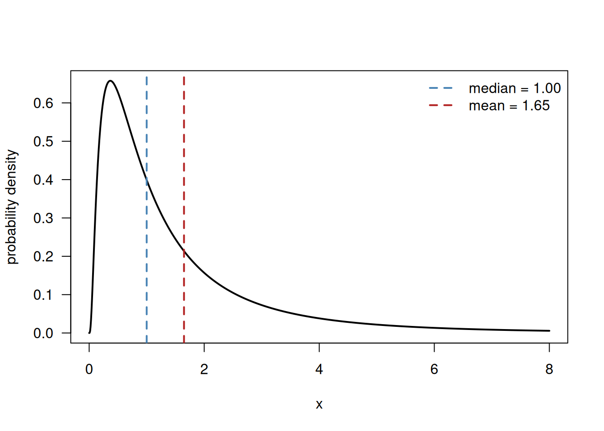
The median is 1 and the mean is 1.65, so the mean lies clearly to the right of the median. This is the usual signature of a right-skewed distribution: the long right tail contains a few very large values which pull the mean upwards, whereas the median only counts how many observations lie left and right and is therefore unaffected. That the median equals exp(meanlog) is no coincidence: exactly half of a normal distribution lies below its mean, and exponentiating preserves the ordering, hence half of the log-normal distribution lies below \(e^{\mu}\).
plnorm(exp(0), meanlog = 0, sdlog = 1)[1] 0.5exp(meanlog) is therefore the median and not the mean — a mistake that is made frequently. The variance co-determines the mean of a log-normal distribution: the mean is \(e^{\mu + \sigma^2/2}\), which grows as \(\sigma\) grows even when \(\mu\) stays the same.
Exercise 7
This exercise makes the link between the area under a density curve and the value of the cumulative distribution function explicit.
For the standard normal distribution, draw the density curve between \(-4\) and \(4\) and shade the area under the curve to the left of \(x = 2\). Then:
- Read
pnorm(2)and check that it corresponds to the shaded area. - Calculate the same area numerically with
integrate(). - Shade instead the area between \(x = -1.96\) and \(x = 1.96\), and calculate that area both as a difference of two
pnorm()values and withintegrate(). - Explain in one or two sentences why we cannot do the same thing for a single point, i.e. why \(P(X = 2) = 0\) for a continuous distribution, whereas
dnorm(2)is clearly larger than 0.
Answer
a. The shaded region runs from the left tail up to \(x = 2\). polygon() needs a closed sequence of coordinates: first along the curve from left to right, then back along the x-axis from right to left (which is what rev() accomplishes).
x_shade <- seq(from = -4, to = 2, length.out = 200)
y_shade <- dnorm(x_shade)
curve(dnorm(x), from = -4, to = 4, las = 1,
xlab = "x", ylab = "probability density")
polygon(x = c(x_shade, rev(x_shade)),
y = c(y_shade, rep(0, length(y_shade))),
col = "grey80", border = NA)
curve(dnorm(x), from = -4, to = 4, add = TRUE, lwd = 2)
abline(v = 2, col = "firebrick", lwd = 2)
text(x = -0.6, y = 0.15, labels = "area = 0.977")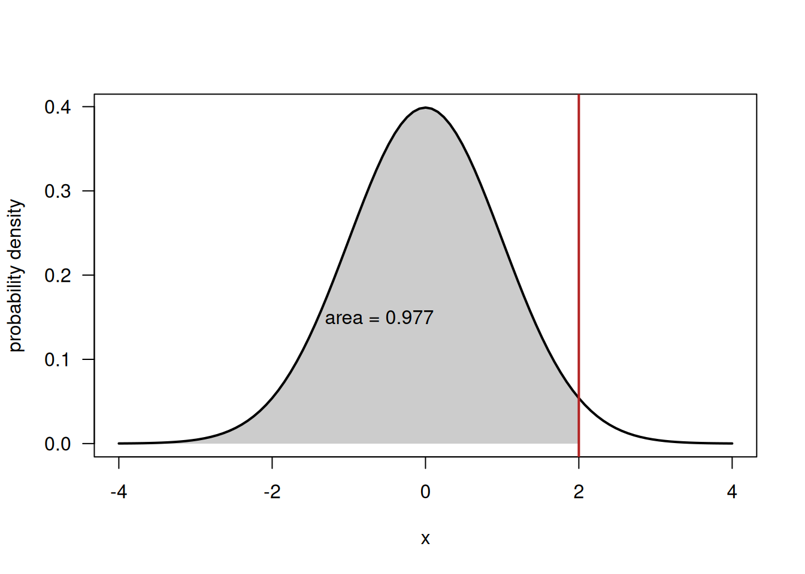
Almost the entire area is shaded, which matches the cumulative probability:
pnorm(2)[1] 0.9772499b. The same number obtained by numerical integration of the density:
integrate(dnorm, lower = -Inf, upper = 2)0.9772499 with absolute error < 1.6e-06integrate() returns 0.9772 with a very small numerical error, identical to pnorm(2). This is the point of the exercise: the cumulative distribution function is the integral of the density function, so “area under the curve up to \(x\)” and “value of the cumulative distribution function at \(x\)” are two descriptions of the same quantity. In Exercise 2 we saw the discrete counterpart, where the integral was simply a sum.
c. The central 95% region:
x_mid <- seq(from = -1.96, to = 1.96, length.out = 200)
y_mid <- dnorm(x_mid)
curve(dnorm(x), from = -4, to = 4, las = 1,
xlab = "x", ylab = "probability density")
polygon(x = c(x_mid, rev(x_mid)),
y = c(y_mid, rep(0, length(y_mid))),
col = "grey80", border = NA)
curve(dnorm(x), from = -4, to = 4, add = TRUE, lwd = 2)
abline(v = c(-1.96, 1.96), col = "firebrick", lwd = 2)
text(x = 0, y = 0.15, labels = "area = 0.95")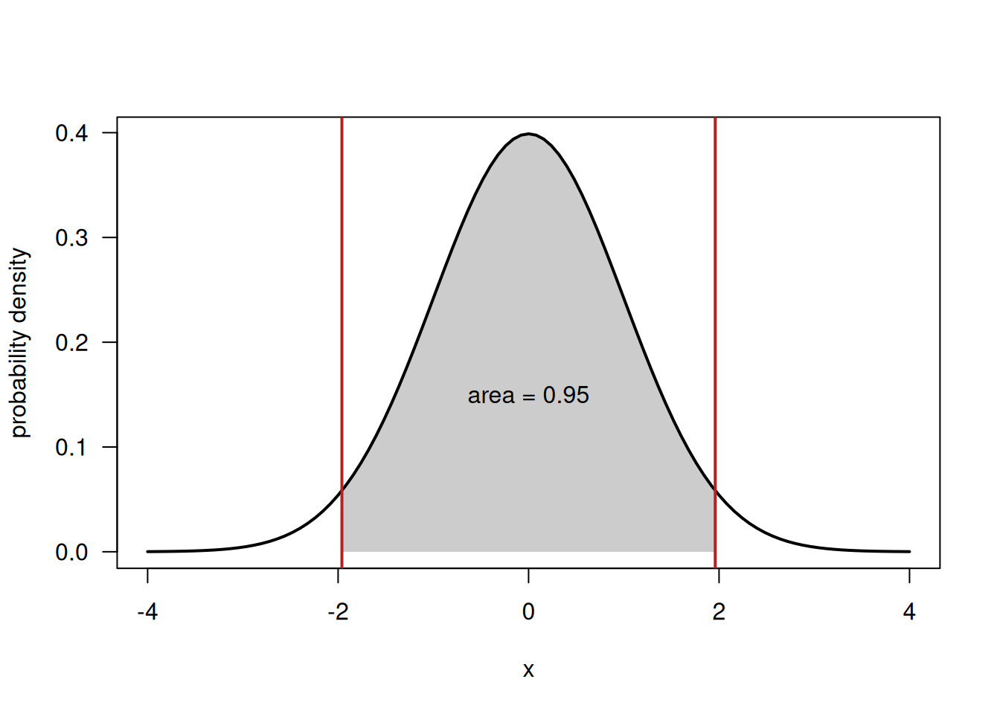
c(difference_of_pnorm = pnorm(1.96) - pnorm(-1.96),
numerical_integral = integrate(dnorm, lower = -1.96, upper = 1.96)$value)difference_of_pnorm numerical_integral
0.9500042 0.9500042 The area between two values is obtained as the difference of the two cumulative probabilities: everything up to 1.96 minus everything up to \(-1.96\). Both routes give 0.95, the familiar central 95% interval, which is of course the mirror image of the quantiles computed in Exercise 5a.
d. A single point has zero width, so the region under the curve above it has zero area, and \(P(X = 2) = 0\). Formally, integrate(dnorm, lower = 2, upper = 2) is 0:
integrate(dnorm, lower = 2, upper = 2)$value[1] 0dnorm(2) = 0.054 is not this probability but the height of the curve there — a probability per unit of x. Only after multiplying by a width (i.e. integrating over an interval) does it become a probability. For a discrete distribution the situation is different: there the possible outcomes are separate points which each carry a genuine chunk of probability, which is why dpois() and dbinom() could be interpreted directly as probabilities in Exercises 2 and 3.
Exercise 8
Finally we confront a theoretical distribution with real data. Using the cats dataset from the MASS package, take the body weight Bwt of the 144 cats.
- Estimate the two parameters of a normal distribution from these data (use the sample mean and the sample standard deviation) and draw the resulting normal density on top of a density histogram of
Bwt. - Using the fitted normal distribution, calculate the probability that a cat weighs at most 2.5 kg and the probability that it weighs 3 kg or more. Compare each of them with the corresponding proportion actually observed in the data (
mean(cats$Bwt <= 2.5)gives you the observed proportion). - Compare the theoretical 90% quantile
qnorm(0.90, ...)with the observed 90% quantilequantile(cats$Bwt, 0.90). - Judging from the figure and from the comparisons in (b) and (c), is the normal distribution a satisfactory description of these data? Look at
table(cats$Sex)and at separate histograms per sex before you answer.
Answer
a. The normal distribution has two parameters, \(\mu\) and \(\sigma\), which we estimate by the sample mean and the sample standard deviation.
mu_hat <- mean(cats$Bwt)
sigma_hat <- sd(cats$Bwt)
c(n = length(cats$Bwt), mean = mu_hat, sd = sigma_hat) n mean sd
144.0000000 2.7236111 0.4853066 hist(cats$Bwt, probability = TRUE, breaks = 15, col = "grey90", las = 1,
xlab = "Body weight (kg)", ylab = "density",
main = "")
rug(cats$Bwt)
lines(density(cats$Bwt), lwd = 2, col = "steelblue")
curve(dnorm(x, mean = mu_hat, sd = sigma_hat),
add = TRUE, lwd = 2, col = "firebrick")
legend("topright", bty = "n", lwd = 2,
col = c("steelblue", "firebrick"),
legend = c("empirical density", "fitted normal"))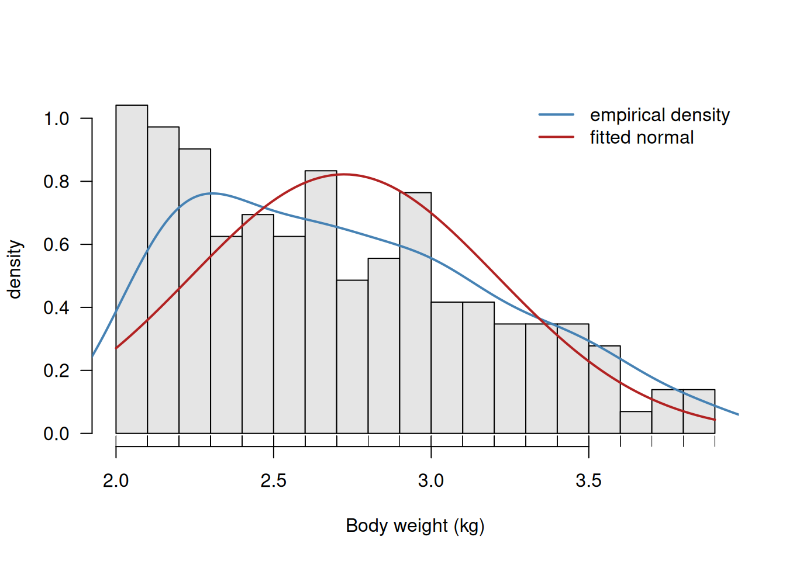
Note that probability = TRUE is essential: only then does the histogram have a total area of 1 and is it on the same scale as the density curve.
b. Theoretical versus observed probabilities:
comparison <- rbind(
"P(Bwt <= 2.5)" = c(theoretical = pnorm(2.5, mean = mu_hat, sd = sigma_hat),
observed = mean(cats$Bwt <= 2.5)),
"P(Bwt >= 3.0)" = c(theoretical = pnorm(3.0, mean = mu_hat, sd = sigma_hat,
lower.tail = FALSE),
observed = mean(cats$Bwt >= 3.0))
)
round(comparison, 3) theoretical observed
P(Bwt <= 2.5) 0.322 0.424
P(Bwt >= 3.0) 0.285 0.326The fitted normal distribution says that about 32% of the cats should weigh 2.5 kg or less, but in fact 42% of them do. In the upper tail the agreement is better (28% expected against 33% observed). The discrepancy in the lower half is substantial.
c. The 90% quantiles:
c(theoretical_q90 = qnorm(0.90, mean = mu_hat, sd = sigma_hat),
observed_q90 = as.numeric(quantile(cats$Bwt, 0.90)))theoretical_q90 observed_q90
3.345557 3.400000 These two are reasonably close (3.35 against 3.40 kg), so in the upper tail the fitted normal distribution is not bad.
d. The normal distribution is a mediocre description of these data. The figure shows that the empirical density is not a single symmetric bell: there is a pronounced peak just above 2 kg with a shoulder or second bump around 3–3.5 kg, and the fitted normal curve smooths straight over this structure while at the same time predicting far too little probability just below 2.5 kg.
The explanation is that the sample mixes two groups:
table(cats$Sex)
F M
47 97 round(rbind(
mean = tapply(cats$Bwt, cats$Sex, mean),
sd = tapply(cats$Bwt, cats$Sex, sd),
n = tapply(cats$Bwt, cats$Sex, length)
), 3) F M
mean 2.360 2.900
sd 0.274 0.467
n 47.000 97.000par(mfrow = c(1, 2))
for (s in c("F", "M")) {
weights_s <- cats$Bwt[cats$Sex == s]
hist(weights_s, probability = TRUE, breaks = 10, col = "grey90", las = 1,
xlim = range(cats$Bwt),
xlab = "Body weight (kg)", ylab = "density",
main = paste("Sex =", s))
rug(weights_s)
curve(dnorm(x, mean = mean(weights_s), sd = sd(weights_s)),
add = TRUE, lwd = 2, col = "firebrick")
}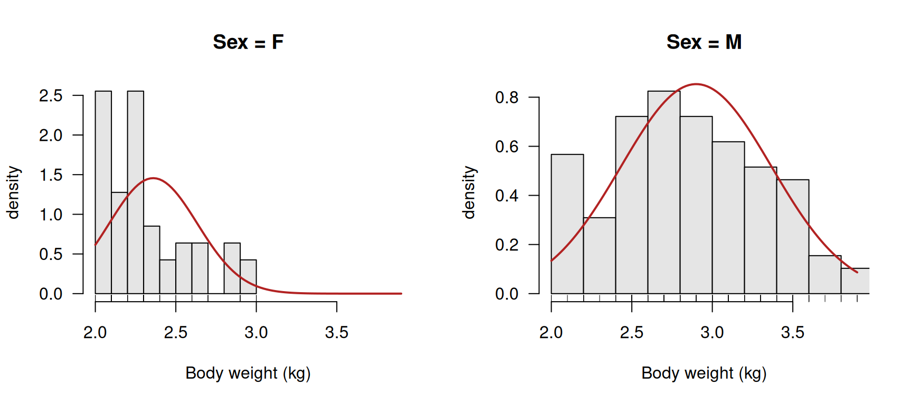
par(mfrow = c(1, 1))Female cats are on average clearly lighter than male cats, and there are almost twice as many males as females. The pooled distribution is therefore a mixture of two normal distributions with different means, which is skewed and slightly bimodal rather than normal. Within each sex the normal distribution is a much more convincing description.
The general lesson is the one Dormann stresses at the start of Chap. 3: a distribution is an assumption which we impose on the data, and it has to be justified in every single case. Plotting the fitted distribution on top of the data, and comparing a few theoretical probabilities and quantiles with their observed counterparts, is a quick and effective way of checking whether that assumption is tenable.